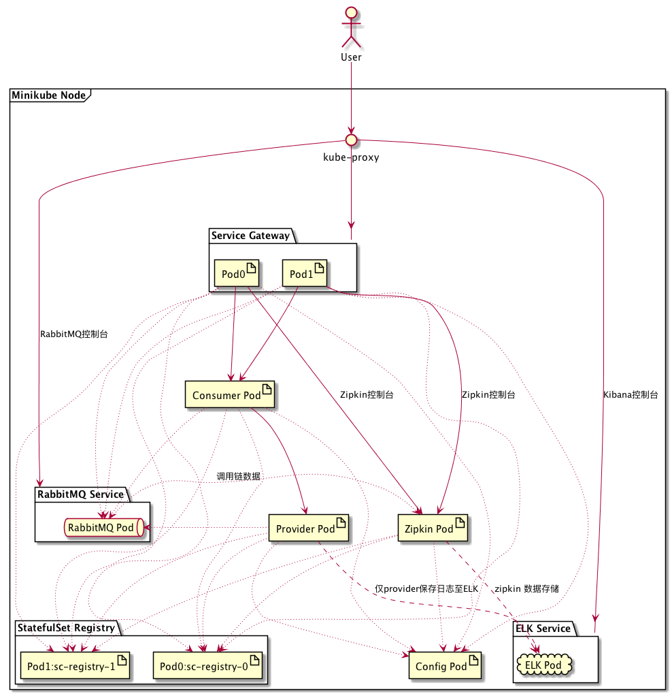

重要提示：本篇文章的目标在Edgware.SR3上并未成功
原因在于在这个版本上Eureka Client运行在Docker中时，无法以Eureka Client IP地址进行注册，服务消费方从注册中心获取到的是Pod的名称，通过此名称无法访问到服务所在的机器。例如：应用在启动时，查询到sc-config配置中心的主机是sc-config-f54cdc656-2524j这样的主机名，通过个主机名去获取配置信息将会因网络无法连接而失败，进而导致应用无法正常启动。
注册中心本向使用了StatefulSets进行部署，客户端是使用固定的域名进行访问的，因此没有这个问题。如果我们将其它服务都变成StatefulSets方式进行部署在Edgware.SR3上也许也能成功。但这样整个应用就变成了Sateful Service了，将失去动态扩容的能力。
问题的根源在于：即使在Eureka Server上添加eureka.instance.prefer-ip-address = true也不能较好解决（添加这个参数后在容器外是有效的，客户端会以IP进行注册）。
具体问题可参考：
axon-demo/issue/18
spring-cloud-netflix/issue/2878
spring-cloud-netflix/issue/432
在spring-cloud-netflix/issue/2878的Issue中提到2.0.0.RELEASE milestone on 26 Apr中将解决这个问题。
等Spring Cloud升级至F版，也许就能与K8S快乐的玩耍了。
相关的代码、配置文件的调整已经完成。配套的代码也已经添加了Dockerfile和Kubernetes的部署文件。
这是Spring Cloud上手系列的第十二篇，代码放在GitHub上，随着本系列文章更新。
概述
容器化几乎是大型Spring Cloud集群部署的必经之路。在前面的几篇文章中，我们已经在开发环境上使用docker来运行RabbitMQ和ELK等基础设施。然而Docker由于网络方案等方面的原因在实际生产应用中的案例并不多见。与Docker相比，Kubernetes有着更强大的集群管理和维护能力。随着Docker支持Kubernetes编排，Kubernetes有一统江湖之势。本篇我们的目标是将应用和基础设施部署至Minikube中。
部署架构
总体部署架构如下：

Kubernetes暴露的Service主要有3个：
-
Zuul Gateway
-
ELK中的Kibana控制台
-
RabbitMQ控制台
RabbitMQ和ELK采用Service模式部署，不考虑它们的高可用问题，依赖于Minikube带的DNS功能，通过服务名称进行访问，只将它们的管理控制台暴露出来。
由于各应用需要通过Registry的地址才能连接，我们准备让Registry以2 replica来运行。因此Registry应用需要以StatefulSet方式进行部署，Kubernetes会为每这两个Pod产生固定的主机名。这两个主机名配置在各应用的docker Profile里，只要在构建容器镜像时指定程序以docker Profile来运行即可。
构建镜像
为避免使用镜像仓库，我们直接使用Minikube来构建镜像。
- 首先安装Docker和Minikube。
使用eval $(minikube docker-env)让本机Docker命令行连接Minikube中的Docker服务。
- 在各个模块下添加Dockerfile文件，以
registry模块为例：
1
2
3
|
from anapsix/alpine-java
ADD ./build/libs/sc-registry-0.0.1.jar app.jar
ENTRYPOINT ["java","-Djava.security.egd=file:/dev/./urandom","-Dspring.profiles.active=dev,native","-jar","/app.jar"]
|
- 在
support/k8s目录下添加build-imag.sh
1
2
3
4
5
6
|
docker build -t jamsa/sc-registry ../../registry
docker build -t jamsa/sc-config ../../config
docker build -t jamsa/sc-gateway ../../gateway
docker build -t jamsa/sc-zipkin ../../zipkin
docker build -t jamsa/sc-provider ../../provider/service
docker build -t jamsa/sc-consumer ../../consumer/service
|
在该目录下执行这个脚本，构建所有镜像。

部署
上面的部署架构图中主要有StatefulSet和Service两类镜像需要部署。
StatefulSet部署
这里主要是指sc-registry镜像。其它Pod需要使用它的各个Pod的主机名来连接它。
首先，编写sc-registry.yml:
1
2
3
4
5
6
7
8
9
10
11
12
13
14
15
16
17
18
19
20
21
22
23
24
25
26
27
28
29
30
31
32
33
34
35
|
apiVersion: v1
kind: Service
metadata:
name: sc-registry
labels:
app: sc-registry
spec:
ports:
- port: 9001
name: sc-registry
clusterIP: None
selector:
app: sc-registry
---
apiVersion: apps/v1beta1
kind: StatefulSet
metadata:
name: sc-registry
spec:
serviceName: sc-registry
replicas: 2
template:
metadata:
labels:
app: sc-registry
spec:
containers:
- name: sc-registry
imagePullPolicy: Never #强制使用本地镜像，否则Minikube会从仓库拉取镜像
image: jamsa/sc-registry
ports:
- containerPort: 9001
name: client
|
这里按Stateless Service、StatefulSet方式部署两个registry实例。
用kubectl create来让配置生效：

通过上图能看到两个Pods已经运行起来。
通过kubectl describe pods sc-registry-1能看到这个Pods的详细信息

进入Minikube集群，查询域名信息：
1
2
3
4
5
6
7
|
➜ ~ kubectl run -i --tty --image busybox dns-test --restart=Never --rm nslookup sc-registry
Server: 10.96.0.10
Address 1: 10.96.0.10 kube-dns.kube-system.svc.cluster.local
Name: sc-registry
Address 1: 172.17.0.5 sc-registry-0.sc-registry.default.svc.cluster.local
Address 2: 172.17.0.6 sc-registry-1.sc-registry.default.svc.cluster.local
|
➜ k8s git:(master) ✗是我本机的命令提示符。
从命令的返回结果可以看到，以Headless Service部署sc-registry之后，两个Pod都分配了单独的域名。我们各个应用的注册中心配置信息需要与这两个域名保持一致。
我们也可以用kubectl exec来查看某个Pod的信息：
1
2
3
4
5
6
7
8
9
10
11
12
13
14
15
|
➜ k8s git:(master) ✗ kubectl exec sc-registry-0 hostname
sc-registry-0
➜ k8s git:(master) ✗ kubectl exec sc-registry-0 cat /etc/hosts
# Kubernetes-managed hosts file.
127.0.0.1 localhost
::1 localhost ip6-localhost ip6-loopback
fe00::0 ip6-localnet
fe00::0 ip6-mcastprefix
fe00::1 ip6-allnodes
fe00::2 ip6-allrouters
172.17.0.5 sc-registry-0.sc-registry.default.svc.cluster.local sc-registry-0
➜ k8s git:(master) ✗ kubectl exec sc-registry-0 cat /etc/resolv.conf
nameserver 10.96.0.10
search default.svc.cluster.local svc.cluster.local cluster.local
options ndots:5
|
从上面的信息我们可以看到，对应的主机名是sc-registry-{0-...}，域名是sc-registry-{0-...}.sc-registry.default.svc.cluster.local。
我们需要对各个模块bootstrap.yml中Docker Profile的注册中心地址进行调整。
先删除上面的部署：
1
2
3
4
5
6
7
8
9
10
11
12
13
14
15
16
17
|
➜ k8s git:(master) ✗ kubectl get pods
NAME READY STATUS RESTARTS AGE
hello-c6fb875c9-gb2zs 1/1 Running 2 78d
sc-registry-0 1/1 Running 0 42m
sc-registry-1 1/1 Running 0 42m
➜ k8s git:(master) ✗ kubectl delete service sc-registry
service "sc-registry" deleted
➜ k8s git:(master) ✗ kubectl get pods
NAME READY STATUS RESTARTS AGE
hello-c6fb875c9-gb2zs 1/1 Running 2 78d
sc-registry-0 1/1 Running 0 42m
sc-registry-1 1/1 Running 0 42m
➜ k8s git:(master) ✗ kubectl delete statefulsets sc-registry
statefulset.apps "sc-registry" deleted
➜ k8s git:(master) ✗ kubectl get pods
NAME READY STATUS RESTARTS AGE
hello-c6fb875c9-gb2zs 1/1 Running 2 78d
|
使用build-images.sh重新构建镜像，并重新部署。
1
2
3
4
5
6
7
8
9
10
11
|
➜ k8s git:(master) ✗ kubectl get pods
NAME READY STATUS RESTARTS AGE
hello-c6fb875c9-gb2zs 1/1 Running 2 80d
rabbitmq-f8f697d55-ws2tq 1/1 Running 0 5m
sc-config-f54cdc656-c9l6x 1/1 Running 0 12m
sc-consumer-6d577db86-stwc9 1/1 Running 0 3m
sc-gateway-767df68df8-dcjrq 1/1 Running 0 3m
sc-gateway-767df68df8-v75vc 1/1 Running 0 3m
sc-provider-b748f9c6-nkgr5 1/1 Running 1 3m
sc-registry-0 1/1 Running 5 1d
sc-registry-1 1/1 Running 5 1d
|
通过kubectl logs -f 可以持续查看Pods的日志：
1
2
3
4
5
|
➜ k8s git:(master) ✗ kubectl logs -f sc-consumer-6d577db86-stwc9
2018-06-16 17:39:40.603 INFO [sc-consumer,,,] 1 --- [ main] s.c.a.AnnotationConfigApplicationContext : Refreshing org.springframework.context.annotation.AnnotationConfigApplicationContext@763d9750: startup date [Sat Jun 16 17:39:40 GMT 2018]; root of context hierarchy
2018-06-16 17:41:53.437 INFO [sc-consumer,,,] 1 --- [ main] f.a.AutowiredAnnotationBeanPostProcessor : JSR-330 'javax.inject.Inject' annotation found and supported for autowiring
2018-06-16 17:42:17.710 INFO [sc-consumer,,,] 1 --- [ main] trationDelegate$BeanPostProcessorChecker : Bean 'org.springframework.retry.annotation.RetryConfiguration' of type [org.springframework.retry.annotation.RetryConfiguration$$EnhancerBySpringCGLIB$$426b2064] is not eligible for getting processed by all BeanPostProcessors (for example: not eligible for auto-proxying)
2018-06-16 17:42:21.118 INFO [sc-consumer,,,] 1 --- [ main] trationDelegate$BeanPostProcessorChecker : Bean 'configurationPropertiesRebinderAutoConfiguration' of type [org.springframework.cloud.autoconfigure.ConfigurationPropertiesRebinderAutoConfiguration$$EnhancerBySpringCGLIB$$68c18b3c] is not eligible for getting processed by all BeanPostProcessors (for example: not eligible for auto-proxying)
|
通过minikube ssh进入minikube虚拟机查询它的局域网ip地址，之后通过http://ip:32000访问sc-gateway Service 。
https://github.com/spring-cloud/spring-cloud-netflix/issues/2878
参考Kubernetes手册